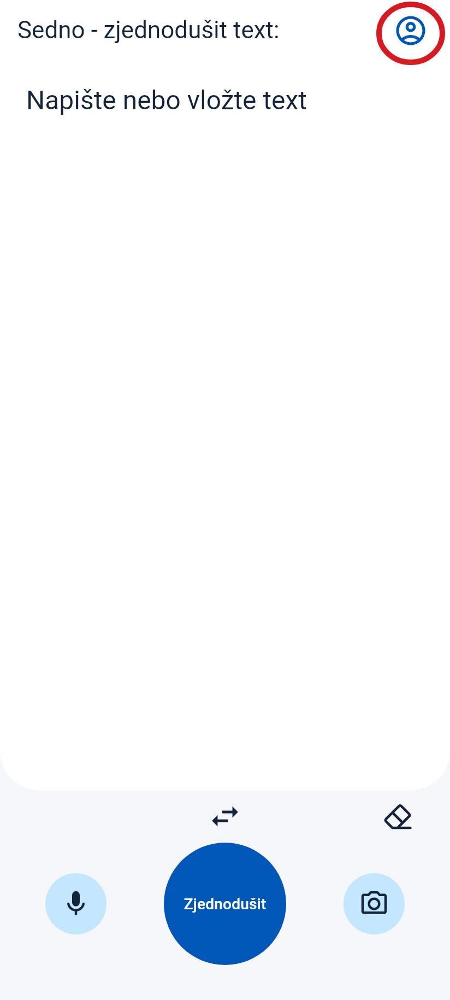
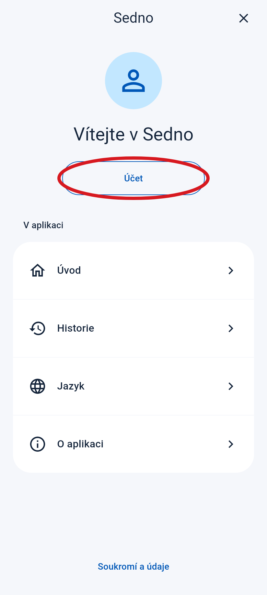
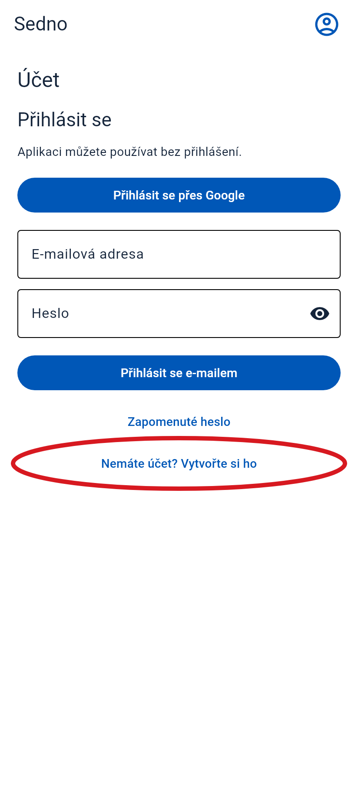
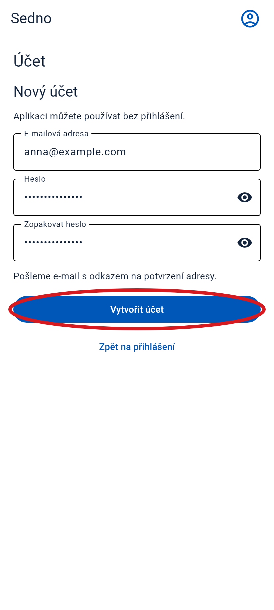
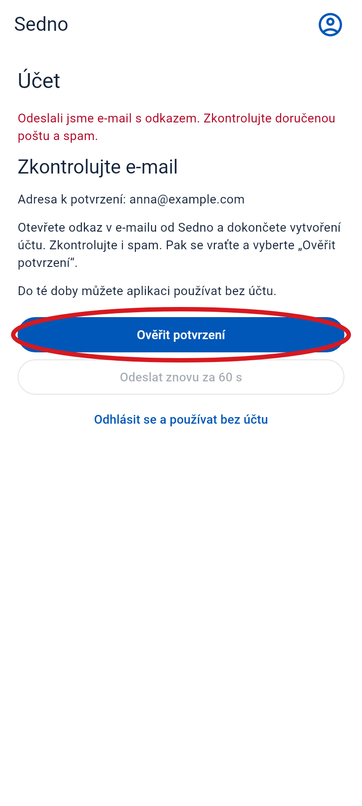
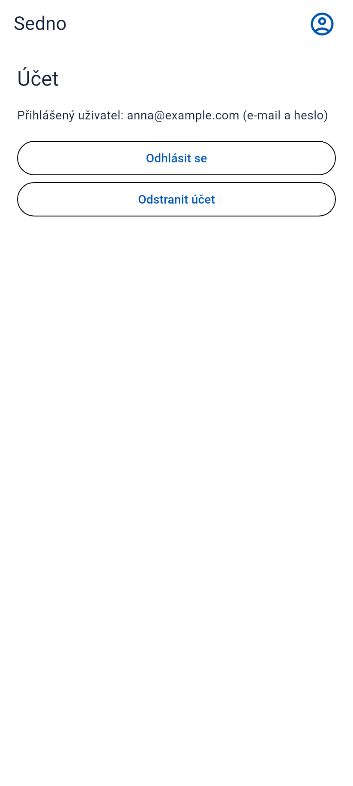

Jak si vytvořit účet
Otevři Sedno v telefonu. Postupuj podle těchto kroků.
Červený kroužek ukazuje, kam klepnout. Tyto obrazovky jsou z aplikace. E-mail je příklad.
-
1 Otevři menu
Klepni na ikonu osoby vpravo nahoře.
Klepni sem

-
2 Vyber „Účet“
Klepni na tlačítko v červeném kroužku.
Klepni sem

-
3 Vyber vytvoření účtu
Klepni na „Nemáte účet? Vytvořte si ho“. Pokud tlačítko nevidíš, přejeď prstem nahoru.
Klepni sem

-
4 Zadej e-mail a heslo
- Zadej svou e-mailovou adresu.
- Vymysli heslo s alespoň 6 znaky.
- Níže zadej stejné heslo ještě jednou.
- Klepni na „Vytvořit účet“.

-
5 Otevři svou e-mailovou schránku
Najdi zprávu od Sedna. Podívej se i do složky Spam. Otevři zprávu a klepni na odkaz pro potvrzení e-mailu.
Klepni sem
Příklad e-mailu
Sedno
Potvrď svou e-mailovou adresu v Sednu.
Potvrdit e-mail -
6 Vrať se do Sedna
Znovu otevři Sedno. Pokud stále vidíš tuto obrazovku, klepni na „Ověřit potvrzení“.
Klepni sem

-
7 Hotovo!
Vidíš svou e-mailovou adresu. Tvůj účet je připravený.
